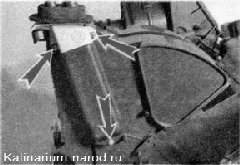
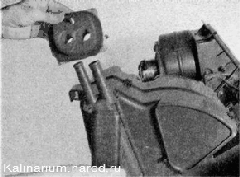
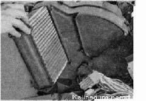

Радиатор отопителя - снятие и установкаДля вьполнения работы потребуется мультиметр. Снятие 1. Подготавливаем автомобиль к выполнению работы. 2. Снимаем панель приборов в сборе с отопителем (см. «Панель приборов — снятие и установка»). 3. Крестовой отверткой отворачиваем три самореза. 4. Снимаем с патрубков радиатора уплотнительную прокладку вместе с кронштейном и крышку, закрывающую радиатор. 5. Извлекаем радиатор из отопителя. 
Устанавливаем радиатор в обратной последовательности. |